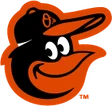

Historical player · P
Chief Hogsett
- Position
- P
- Bats/Throws
- L/L
- Height/Weight
- 6'0", 190 lb
- Born
- Nov 2, 1903
- Major-league seasons
- 1929–1944 (11)
- Main franchise
- Detroit Wolverines
- Status
- Retired
| Year | Team | Lg | G | PA | AB | R | H | 2B | 3B | HR | RBI | SB | CS | BB | K | AVG | OBP | SLG | OPS | WAR |
|---|---|---|---|---|---|---|---|---|---|---|---|---|---|---|---|---|---|---|---|---|
| 1929 | Detroit Tigers | AL | 4 | 10 | 10 | 0 | 2 | 0 | 0 | 0 | 0 | 0 | 0 | 0 | 2 | .200 | .200 | .200 | .400 | -0.1 |
| 1930 | Detroit Tigers | AL | 33 | 59 | 58 | 6 | 17 | 2 | 1 | 1 | 5 | 0 | 0 | 1 | 12 | .293 | .305 | .414 | .719 | 0.0 |
| 1931 | Detroit Tigers | AL | 22 | 49 | 47 | 7 | 11 | 1 | 0 | 0 | 1 | 0 | 0 | 1 | 10 | .234 | .265 | .255 | .521 | -0.2 |
| 1932 | Detroit Tigers | AL | 48 | 65 | 57 | 11 | 14 | 2 | 0 | 2 | 5 | 0 | 0 | 4 | 18 | .246 | .295 | .386 | .681 | -0.1 |
| 1933 | Detroit Tigers | AL | 45 | 39 | 38 | 2 | 8 | 0 | 0 | 0 | 2 | 0 | 0 | 1 | 12 | .211 | .231 | .211 | .441 | -0.3 |
| 1934 | Detroit Tigers | AL | 26 | 13 | 13 | 0 | 3 | 0 | 0 | 0 | 1 | 0 | 0 | 0 | 5 | .231 | .231 | .231 | .462 | -0.1 |
| 1935 | Detroit Tigers | AL | 40 | 23 | 23 | 4 | 6 | 0 | 0 | 2 | 4 | 0 | 0 | 0 | 5 | .261 | .261 | .522 | .783 | 0.1 |
| 1936 |  St. Louis Browns | AL | 43 | 79 | 70 | 7 | 10 | 2 | 0 | 0 | 2 | 0 | 0 | 6 | 19 | .143 | .221 | .171 | .392 | -0.8 |
| 1937 | St. Louis Browns | AL | 40 | 64 | 62 | 6 | 13 | 2 | 0 | 1 | 5 | 0 | 0 | 2 | 13 | .210 | .234 | .290 | .525 | -0.4 |
| 1938 | Washington Senators | AL | 32 | 25 | 23 | 3 | 7 | 2 | 1 | 0 | 1 | 0 | 0 | 2 | 3 | .304 | .360 | .478 | .838 | 0.1 |
| 1944 | Detroit Tigers | AL | 3 | 2 | 2 | 0 | 0 | 0 | 0 | 0 | 1 | 0 | 0 | 0 | 0 | .000 | .000 | .000 | .000 | 0.0 |
| Career | 11 seasons | 336 | 428 | 403 | 46 | 91 | 11 | 2 | 6 | 27 | 0 | 0 | 17 | 99 | .226 | .261 | .308 | .568 | -1.8 |
| Year | Team | Lg | G | GS | W | L | SV | CG | SHO | IP | H | ER | BB | K | HR | ERA | WHIP | K/9 | WAR |
|---|---|---|---|---|---|---|---|---|---|---|---|---|---|---|---|---|---|---|---|
| 1929 | Detroit Tigers | AL | 4 | 4 | 1 | 2 | 0 | 2 | 1 | 28.2 | 34 | 9 | 9 | 9 | 0 | 2.83 | 1.50 | 2.8 | 0.7 |
| 1930 | Detroit Tigers | AL | 33 | 17 | 9 | 8 | 1 | 4 | 0 | 146.0 | 174 | 88 | 63 | 54 | 9 | 5.42 | 1.62 | 3.3 | 1.0 |
| 1931 | Detroit Tigers | AL | 22 | 12 | 3 | 9 | 2 | 5 | 0 | 112.1 | 150 | 74 | 33 | 47 | 8 | 5.93 | 1.63 | 3.8 | 1.3 |
| 1932 | Detroit Tigers | AL | 47 | 15 | 11 | 9 | 7 | 7 | 0 | 178.0 | 201 | 70 | 66 | 56 | 8 | 3.54 | 1.50 | 2.8 | 2.1 |
| 1933 | Detroit Tigers | AL | 45 | 2 | 6 | 10 | 9 | 0 | 0 | 116.0 | 137 | 58 | 56 | 39 | 7 | 4.50 | 1.66 | 3.0 | 0.0 |
| 1934 | Detroit Tigers | AL | 26 | 0 | 3 | 2 | 3 | 0 | 0 | 50.1 | 61 | 24 | 19 | 23 | 4 | 4.29 | 1.59 | 4.1 | 0.2 |
| 1935 | Detroit Tigers | AL | 40 | 0 | 6 | 6 | 5 | 0 | 0 | 96.2 | 109 | 38 | 49 | 39 | 1 | 3.54 | 1.63 | 3.6 | 0.8 |
| 1936 | Detroit Tigers | AL | 3 | 0 | 0 | 1 | 0 | 0 | 0 | 4.0 | 8 | 4 | 1 | 1 | 1 | 9.00 | 2.25 | 2.2 | -0.1 |
| 1936 | St. Louis Browns | AL | 39 | 29 | 13 | 15 | 1 | 10 | 0 | 215.1 | 278 | 132 | 90 | 67 | 15 | 5.52 | 1.71 | 2.8 | 2.2 |
| 1936 total | 42 | 29 | 13 | 16 | 1 | 10 | 0 | 219.1 | 286 | 136 | 91 | 68 | 16 | 5.58 | 1.72 | 2.8 | 2.2 | ||
| 1937 | St. Louis Browns | AL | 37 | 26 | 6 | 19 | 2 | 8 | 1 | 177.1 | 245 | 124 | 75 | 68 | 19 | 6.29 | 1.80 | 3.5 | 1.2 |
| 1938 | Washington Senators | AL | 31 | 9 | 5 | 6 | 3 | 1 | 0 | 91.0 | 107 | 61 | 36 | 33 | 12 | 6.03 | 1.57 | 3.3 | 0.1 |
| 1944 | Detroit Tigers | AL | 3 | 0 | 0 | 0 | 0 | 0 | 0 | 6.1 | 7 | 0 | 4 | 5 | 1 | 0.00 | 1.74 | 7.1 | -0.2 |
| Career | 11 seasons | 330 | 114 | 63 | 87 | 33 | 37 | 2 | 1222.0 | 1511 | 682 | 501 | 441 | 85 | 5.02 | 1.65 | 3.2 | 9.3 |
| Year | Team | Pos | G | GS | Inn | TC | PO | A | E | DP | Fld% |
|---|---|---|---|---|---|---|---|---|---|---|---|
| 1929 | Detroit Tigers | P | 4 | 4 | 28.2 | 9 | 1 | 8 | 0 | 1 | 1.000 |
| 1930 | Detroit Tigers | P | 33 | 17 | 146.0 | 52 | 10 | 37 | 5 | 1 | .904 |
| 1931 | Detroit Tigers | P | 22 | 12 | 112.1 | 32 | 8 | 23 | 1 | 0 | .969 |
| 1932 | Detroit Tigers | P | 47 | 15 | 178.0 | 57 | 8 | 46 | 3 | 4 | .947 |
| 1933 | Detroit Tigers | P | 45 | 2 | 116.0 | 36 | 4 | 31 | 1 | 2 | .972 |
| 1934 | Detroit Tigers | P | 26 | 0 | 50.1 | 15 | 4 | 11 | 0 | 0 | 1.000 |
| 1935 | Detroit Tigers | P | 40 | 0 | 96.2 | 38 | 5 | 31 | 2 | 2 | .947 |
| 1936 | Detroit Tigers | P | 3 | 0 | 4.0 | 3 | 0 | 3 | 0 | 0 | 1.000 |
| 1936 | St. Louis Browns | P | 39 | 29 | 215.1 | 56 | 2 | 48 | 6 | 2 | .893 |
| 1937 | St. Louis Browns | P | 37 | 26 | 177.1 | 39 | 8 | 28 | 3 | 2 | .923 |
| 1938 | Washington Senators | P | 31 | 9 | 91.0 | 27 | 7 | 18 | 2 | 2 | .926 |
| 1944 | Detroit Tigers | P | 3 | 0 | 6.1 | 2 | 0 | 1 | 1 | 0 | .500 |
| Career | P | 330 | 114 | 1222.0 | 366 | 57 | 285 | 24 | 16 | .934 |
League-leader finishes top 10; 0 times first
Seasons before 2002 are real MLB history from the OOTP export, mapped by OOTP onto this league's 30 original franchises (club names are as they were in that season). 2002 is this universe. Player names are as the export stores them (apart from a few Alexander has renamed in his game since this dump, such as Babe Ruth): OOTP gives some historical players generated names (the 586-homer career is filed under “Legendre Robinson”), and the site keeps them. Every player links to a page: 2002 players to their season pages, everyone else to a historical career page.